건축설비기사 (2018-04-28 기출문제)
1과목: 건축일반
1. 수직압력이 부재의 축선을 따라 직압력만으로 전달되고 부재의 하부에는 인장력이 발생하지 않도록 한 구조 방식은?
- 아치구조
- 현수막구조
- 스페이스프레임구조
- 절판구조
(정답률: 75%)

2. 상점건축의 평면세부계획에 관한 설명으로 옳지 않은 것은?
- 소수의 종업원으로 다수의 고객을 수용할 수 있게 계획한다.
- 상점에 입장하는 고객과 직원의 시선이 바로 마주치는 것은 피한다.
- 직원의 동선을 길게 하여 보행거리를 확보한다.
- 직원은 고객을 쉽게 볼 수 있도록 하며, 고객으로 하여금 감시받고 있다는 인상을 주지 않도록 한다.
(정답률: 91%)
3. 학교건축에서 교실을 2~3개의 소단위로 분리시킨 것을 무엇이라 칭하는가?
- Active type
- Elbow access
- Cluster System
- Platoon type
(정답률: 75%)
4. Modular Coordination에 관한 설명으로 거리가 먼 것은?
- 현장에서는 조립가공이 주업무이므로 현장작업이 단순해지며, 시공의 균질성과 일정수준이 보장된다.
- 주로 건식공법에 의하기 때문에 겨울공사가 가능하며, 공기가 단축된다.
- 국제적인 MC 사용 시 건축 구성재의 국제 교역이 용이하다.
- 다양한 설계작업이 가능한 장점이 있는 반면 전반적으로 설계작업이 복잡하고 난해해 진다.
(정답률: 89%)
5. 자연환기에 관한 설명으로 옳은 것은?
- 실외의 풍속이 적을수록 환기량이 많아진다.
- 실내외의 온도차가 적을수록 환기량은 많아진다.
- 일반적으로 목조주택이 콘크리트조 주택보다 환기량이 적다.
- 한쪽에 큰 창을 두는 것보다 절반크기의 창 2 개를 서로 마주치게 설치하는 것이 환기 계획상 유리하다.
(정답률: 83%)
6. 아파트건축의 성립요건이 아닌 것은?
- 토지가 상승에 의한 저렴한 주거공급의 필요성
- 현대인의 다양하고 개성적인 생활양식의 수용
- 도시생활자의 이동성 증가에 따른 편의성 제공
- 단독주거로는 해결할 수 없는 넓은 옥외공간과 질 높은 주거환경 조성
(정답률: 70%)
7. 프리스트레스트 콘크리트구조에 관한 설명으로 옳지 않은 것은?
- 부재의 단면적을 줄여 자중을 경감할 수 있다.
- 시스관을 사용하는 방식은 프리텐션 방식이다.
- 긴장재는 고강도의 강재를 이용한다.
- 대부분의 경우 주요 구조부의 일부에 프리스트레스트 구조를 설계하고 나머지는 종래의 철근콘크리트 구조를 적용한다.
(정답률: 64%)
8. 인공 광원의 광질 및 특색에 관한 설명으로 옳지 않은 것은?
- 백열 전구는 일반적으로 휘도가 높고 열방사가 많다.
- 할로겐 램프는 고휘도이고 전시용, 옥외등 용으로 사용된다.
- 형광등은 저휘도이고 수명이 백열전구에 비해 길다.
- 수은등은 고휘도이고 점등시간이 매우 짧다.
(정답률: 70%)
9. 목구조의 수평저항력을 보강하기 위한 부재와 거리가 먼 것은?
- 깔도리
- 가새
- 버팀대
- 귀잡이
(정답률: 56%)
10. 실내음향에 관한 설명으로 옳지 않은 것은?
- 음의 계속시간이 길어지면 높이 감각은 둔해진다.
- 직접음은 전파경로가 가장 짧으므로 수음점에 최초로 도래한다.
- 계획상 멀리 전달되게 하기도 하고 가까이에서 소멸되도록 하기도 한다.
- 청중이 많을수록 흡음력이 커서 잔향시간이 적어진다.
(정답률: 64%)
11. 한식지붕에 사용되는 부재나 구조의 명칭이 아닌 것은?
- 보습장
- 동귀틀
- 단골막이
- 동연
(정답률: 56%)
12. 학교의 배치형식 중 폐쇄형에 관한 설명으로 옳지 않은 것은?
- 화재 및 비상시에 불리하다.
- 운동장에서 교실쪽으로 소음이 크다.
- 일조 및 통풍 등 환경조건이 균등하다.
- 대지를 효율적으로 활용할 수 있다.
(정답률: 76%)
13. 한식주택의 특징에 관한 설명으로 옳은 것은?
- 평면구성이 개방적이다.
- 프라이버시가 보장되지 않는다.
- 안방, 건넌방 등으로 실의 용도가 확실하다.
- 한식주택의 가구는 주요한 내용물이다.
(정답률: 57%)
14. 사무소 건축의 코어 형식 중 중심코어형에 관한 설명으로 옳지 않은 것은?
- 2방향 피난에 이상적인 형식으로 방재상 가장 유리하다.
- 구조코어로서 바람직한 형식이다.
- 외관이 획일적으로 되기 쉽다.
- 바닥면적이 큰 경우에 많이 사용된다.
(정답률: 70%)
15. 사무소건축의 사무실 계획에 관한 설명으로 옳은 것은?(오류 신고가 접수된 문제입니다. 반드시 정답과 해설을 확인하시기 바랍니다.)
- 내부 기둥간격 결정 시 철근 콘크리트구조는 철골구조에 비해 기둥간격을 길게 가져갈 수 있다.
- 기준층 계획 시 방화구획과 배연계획은 고려하지 않는다.
- 개방형 사무실은 개실형에 비해 불경기 때에도 임대자를 구하기 쉽다.
- 공조설비의 덕트는 기준층 높이를 결정하는 조건이 된다.
(정답률: 64%)
16. 상점계획에서 진열창의 반사 현상(glare)을 방지하는 방법으로 옳지 않은 것은?
- 진열창 유리를 곡면유리로 사용한다.
- 진열창의 외부에 차양을 설치한다.
- 진열창의 유리를 경사지게 설치한다.
- 내부를 외부보다 어둡게 조명한다.
(정답률: 90%)
17. 건축물에 작용하는 하중에 관한 설명으로 옳지 않은 것은?
- 건축물에는 고정하중과 적재하중이 장기간 지속적으로 동시에 작용한다.
- 건축물에 작용하는 바람, 지진 등은 단기하중이다.
- 건물 자체의 무게인 고정하중은 동하중, 바닥면에 실리는 적재하중은 정하중이라고도 한다.
- 눈은 보통지역에서는 단기하중이 되지만 적설량이 많은 지역에서는 장기하중이 되기도 한다.
(정답률: 85%)
18. 호텔의 객실 종류에서 일반적으로 차지하는 비중이 가장 높은 실의 유형은?
- Single Room
- Twin Room
- Double Room
- Suite Room
(정답률: 73%)
19. 호텔건축의 조닝(zoning)에서 공간적으로 성격이 나머지 셋과 다른 하나는?
- 클로크 룸
- 보이실
- 린넨실
- 트렁크 실
(정답률: 73%)
20. 수평의 지붕 또는 수평에 가까운 지붕에 설치된 창을 천창이라 하며 천창을 이용한 채광을 천창채광이라 한다. 이러한 천창채광방식을 측창채광방식과 비교하여 설명한 내용 중 옳지 않은 것은?
- 시공 및 유지관리가 용이하지 않은 편이다.
- 개방감과 함께 통풍에도 유리하다.
- 실내의 조도가 균일하다.
- 바닥면적이 매우 넓어 효율적인 측창을 설치하기 어려울 때 바람직한 방식이다.
(정답률: 64%)
2과목: 위생설비
21. 배수수직관 내의 압력변화를 방지 또는 완화하기 위해 배수수직관으로부터 분기·입상하여 통기수직관에 접속하는 도피통기관은?
- 습통기관
- 신정통기관
- 공용통기관
- 결합통기관
(정답률: 75%)
22. 다음 중 주철관의 접합 방법에 속하는 것은?
- 나팔식 접합
- 메커니컬 접합
- 플레어 너트 접합
- 시멘트 모르타르 접합
(정답률: 65%)
23. 트랩의 봉수 파괴 원인 중 위생기구에서 트랩을 통하여 배수가 만수상태로 흐를 때 주로 발생 하는 것은?
- 모세관 현상
- 자기 사이펀 작용
- 감압에 의한 흡인작용
- 역압에 의한 분출작용
(정답률: 63%)
24. 관내에 유체가 흐를 때, 어느 장소에서의 흐름의 상태(유속, 압력, 밀도 등)가 시간에 따라 변화 하지 않는 흐름을 무엇이라 하는가?
- 층류
- 난류
- 정상류
- 비정상류
(정답률: 73%)
25. 다음 중 경도가 높은 물을 보일러 용수로 사용하지 않는 가장 주된 이유는?
- 비등점이 낮다.
- 전열량이 너무 커진다.
- 부유물질이 많이 포함되어 있다.
- 보일러 내면에 스케일이 발생된다.
(정답률: 87%)
26. 수질 오염의 지표로 사용되는 것으로서 오수 중에 현탁되어 있는 부유물질을 의미하는 것은?
- DO
- SS
- BOD
- COD
(정답률: 79%)
27. 연면적 3000m2 의 사무소 건축에 필요한 급수량은? (단, 이 건물의 유효 면적은 연면적의 60%이고, 유효 면적 당 인원은 0.2인/m2, 1인 1일 당 급수량은 100L이다.)
- 3600L/d
- 3600m3 /d
- 36000L/d
- 36000m2/d
(정답률: 78%)
28. 경질염화비닐관에 관한 설명으로 옳지 않은 것은?
- 전기절연성이 크고 금속관과 같은 전식작용을 일으키지 않는다.
- 열팽창률이 강관에 비해 작으며 온도변화에 따른 신축이 거의 없다.
- 저온에 약하며 한랭지에서는 외부로부터 조금만 충격을 주어도 파괴되기 쉽다.
- 내식성이 크고 염산, 황산, 가성소다 등의 부식성 약품에 의해 거의 부식되지 않는다.
(정답률: 60%)
29. 중앙식 급탕방식의 설계상 유의사항으로 옳지 않은 것은?
- 각 계통 및 지관의 순환유량이 균등하게 되도록 한다.
- 수평배관의 길이가 가능한 한 길게 되도록 수직관을 배치한다.
- 순환펌프는 과대하게 되지 않도록 설계하며, 환탕관측에 설치한다.
- 열원기기 및 저탕조의 압력상승, 배관의 신축에 대한 안전대책을 고려한다.
(정답률: 82%)
30. 온도 20℃, 길이가 100m인 동관에 탕이 흘러 60℃가 되었을 때, 동관의 팽창량은 얼마인가? (단, 동관의 선팽창계수는 0.171×10-4/℃ 이다.)
- 66.4mm
- 68.4mm
- 76.4mm
- 78.4mm
(정답률: 75%)
31. 원심식 펌프에 관한 설명으로 옳지 않은 것은?
- 터보형 펌프의 일종이다.
- 유체가 회전차의 반경류 방향으로 흐른다.
- 건축설비분야의 급수, 급탕, 배수 등에 주로 이용된다.
- 원심식 펌프에는 피스톤 펌프와 로터리 펌프 등이 있다.
(정답률: 71%)
32. 역류를 방지하여 오염으로부터 상수계통을 보호하기 위한 방법으로 적절하지 않은 것은?
- 토수구 공간을 둔다.
- 역류방지밸브를 설치한다.
- 대기압식 또는 가압식 진공브레이커를 설치한다.
- 수압이 0.4MPa을 초과하는 계통에는 감압밸브를 부착한다.
(정답률: 62%)
33. 급탕설비에서 급탕기기의 부속장치에 관한 설명으로 옳지 않은 것은?
- 안전밸브와 팽창탱크 및 배관 사이에는 차단밸브를 설치한다.
- 온수탱크 상단에는 진공방지밸브를, 하부에는 배수밸브를 설치한다.
- 순간식 급탕가열기에는 이상고온의 경우 가열원(열매체 등)을 차단하는 장치나 기구를 설치한다.
- 밀폐형 가열장치에는 일정 압력 이상이면 압력을 도피시킬 수 있도록 도피밸브나 안전밸브를 설치한다.
(정답률: 80%)
34. 다음 중 간접배수로 하여야 하는 기기·기구에 속하지 않는 것은?
- 제빙기
- 세탁기
- 세면기
- 식기세정기
(정답률: 85%)
35. 중앙식 급탕방식 중 간접가열식에 관한 설명으로 옳지 않은 것은?
- 대규모 급탕설비에 적합하다.
- 고압용 보일러를 설치하여야 한다.
- 가열보일러는 난방용 보일러와 겸용할 수 있다.
- 저탕조 내에 설치한 코일을 통해서 관내의 물을 간접적으로 가열한다.
(정답률: 79%)
36. 스위블형 신축 이음쇠에 관한 설명으로 옳은 것은?
- 패클리스 신축이음쇠라고도 한다.
- 이음부의 나사회전을 이용해서 배관의 신축을 흡수한다.
- 고온고압용 증기배관에 주로 사용되며 온수 난방용 배관에는 사용하지 않는다.
- 강관 또는 동관을 곡관으로 구부려, 구부림을 이용하여 배관의 신축을 흡수한다.
(정답률: 65%)
37. 유체가 관경 50cm인 관 속을 2m/s의 속도로 흐를 때의 유량은?
- 0.39m3/s
- 1.0m3/s
- 3.14m3/s
- 10m3/s
(정답률: 62%)
38. 수도 본관에서 5m 높이에 있는 샤워기의 사용에 필요한 수도 본관의 최저 압력은? (단, 급수방식은 수도직결방식이며, 샤워기의 최저 필요압력은 100kPa, 배관 등의 마찰 손실은 무시한다.)
- 약 1⑤kPa
- 약 150kPa
- 약 600kPa
- 약 5100kPa
(정답률: 69%)
39. 대변기의 세정방식 중 플러시 밸브식에 관한 설명으로 옳지 않은 것은?
- 대변기의 연속 사용이 가능하다.
- 일반 가정용으로는 거의 사용되지 않는다.
- 급수 관경 및 수압과 관계없이 사용 가능하다.
- 세정음에 유수음이 포함되기 때문에 소음이 크다.
(정답률: 74%)
40. 배수관 내 배수의 흐름에 관한 설명으로 옳지 않은 것은?
- 배수수직관의 관경이 작을수록 종국길이는 짧다.
- 일반적으로 배수수직관의 허용유량은 30%정도를 한도로 하고 있다.
- 배수수직관내를 배수가 관벽에 따라 나선형의 상태로 하강하는 현상을 수력도약현상(도수현상)이라고 한다.
- 배수수평지관으로부터 배수수직관에 배수가 유입하면 배수량이 적을 때에는 배수는 수직관 관벽을 따라 지그재그로 강하한다.
(정답률: 55%)
3과목: 공기조화설비
41. 히트펌프에 관한 설명으로 옳지 않은 것은?
- 1대의 기기로 냉방과 난방을 겸용할 수 있다.
- 냉동사이클에서 응축기의 방열을 난방에 이용한다.
- 냉동기의 성적계수가 히트펌프의 성적계수보다 1만큼 크다.
- 히트펌프의 성적계수를 향상시키기 위해 지열 등을 이용할 수 있다.
(정답률: 72%)
42. 그림과 같은 전열교환기의 전열효율(η)을 올바르게 나타낸 것은? (단, 난방의 경우이며, X1, X2, X3, X4는 각 공기 상태의 엔탈피를 나타낸다.)
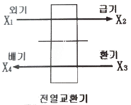
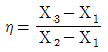
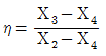
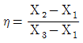
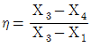
(정답률: 72%)
43. 다음 중 습공기를 가열하였을 경우 증가하지 않는 것은?
- 엔탈피
- 비체적
- 건구온도
- 절대습도
(정답률: 81%)
44. 공기에 관한 설명으로 옳은 것은?
- 0℃ 건조공기의 엔탈피는 0kJ/kg이다.
- 절대습도가 0kg/kg`인 공기를 포화공기라고 한다.
- 현열비가 1이라면 잠열부하만 있다는 것을 의미한다.
- 열수분비가 0이라면 공기의 상태변화에 절대습도의 변화가 없었다는 의미이다.
(정답률: 50%)
45. 바이패스형 변풍량 유닛(VAV unit)에 관한 설명으로 옳지 않은 것은?
- 유닛의 소음발생이 적다.
- 송풍덕트 내의 정압제어가 필요없다.
- 덕트계통의 증설이나 개설에 대한 적응성이 적다.
- 천장 내의 조명으로 인한 발생열을 제거할 수 없다.
(정답률: 57%)
46. 다음과 같은 몰리에르(Mollier)선도의 상태에서 운전하는 히트펌프의 성적계수는?
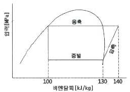
- 3.0
- 3.5
- 4.0
- 4.5
(정답률: 55%)
47. 다음 중 인체의 열쾌적에 영향을 미치는 물리적 온열요소에 속하는 것은?
- 엔탈피
- 현열비
- 상대습도
- 노점온도
(정답률: 66%)
48. 배관재료의 일반적인 용도가 옳게 연결된 것은?
- 동관 - 증기 배관
- 주철관 - 냉각수 배관
- 경질염화비닐관 - 냉매 배관
- 스테인리스강관 - 급수 배관
(정답률: 76%)
49. 10×8×3.5m 크기의 강의실에 35명의 사람이 있을 때 실내의 CO2 농도를 0.1%로 하기 위한 필요 환기량은? (단, 1인당 CO2 발생량은 0.02m3/인·h 이며, 외기의 CO2 의 농도는 0.03%이다.)
- 1000m3 /h
- 1400m3 /h
- 1600m3 /h
- 2000m3 /h
(정답률: 52%)
50. 공기 여과기의 종류 중 일명 전자식 공기청정기라고도 하며, 먼지의 제거효율이 높고, 미세한 먼지라든지 세균도 제거되므로 병원, 정밀기계 공장 등에서 사용이 가능한 것은?
- 전기식
- 건성여과식
- 충돌점착식
- 활성탄 흡착식
(정답률: 71%)
51. 진공환수식 증기난방에서 리프트 이음 (lift fitting)을 적용하는 경우는?
- 방열기보다 환수주관이 높을 때
- 환수배관법을 역환수식으로 할 때
- 방열기보다 응축수 온도가 너무 높을 때
- 진공펌프를 환수주관보다 낮게 설치할 때
(정답률: 72%)
52. 다음과 같은 조건에 있는 체적이 2000m3 인 실의 환기에 의한 현열부하는?
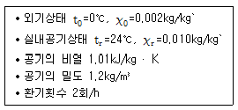
- 16.32kW
- 26.69kW
- 32.32kW
- 59.33kW
(정답률: 62%)
53. 취출구의 허용풍속을 제한하는 가장 주된 이유는?
- 확산반경을 줄이기 위하여
- 송풍동력을 줄이기 위하여
- 소음발생을 억제하기 위하여
- 단락류 발생을 억제하기 위하여
(정답률: 71%)
54. 덕트의 배치방식 중 개별 덕트방식에 관한 설명으로 옳지 않은 것은?
- 덕트 스페이스가 많이 요구된다.
- 각 실의 개별 제어성이 우수하다.
- 공사비가 적어 일반적으로 가장 많이 사용되는 방식이다.
- 입상덕트(주덕트)에서 각개의 취출구로 덕트를 통해 분산하여 송풍하는 방식이다.
(정답률: 73%)
55. 상당외기온도차(ETD, Equivalent Temperature Difference)에 관한 설명으로 옳은 것은?
- 난방부하의 계산에 있어서, 벽체를 통한 손실열량을 계산할 때 사용한다.
- 냉방부하의 계산에 있어서, 벽체를 통한 취득열량을 계산할 때 사용한다.
- 벽체 외부에 흐르는 공기의 속도에 따른 열전달량을 고려한 온도차이다.
- 주로 외기에 접하고 있지 않은 간막이 벽, 천장, 바닥 등으로부터 열전달량을 구하는데 사용한다.
(정답률: 57%)
56. 증기난방에 관한 설명으로 옳지 않은 것은?
- 예열시간이 짧다.
- 온수난방에 비하여 쾌감도가 떨어진다.
- 부하변동에 따른 실내 방열양의 제어가 곤란하다.
- 극장, 영화관 등 천장고가 높은 건물에 주로 사용된다.
(정답률: 64%)
57. 다음의 냉방부하 발생 요인 중 현열과 잠열 모두 갖는 것은?
- 인체발생열량
- 벽체로부터의 취득열량
- 유리로부터의 취득열량
- 덕트로부터의 취득열량
(정답률: 82%)
58. 1개의 실에 설치된 온수용 주철제 방열기의 상당방열면적(EDR)이 20m2이다. 동일한방열기를 5개 실에 설치할 경우, 필요한 전온수 순환량(L/min)은? (단, 방열기의 표준방열량 0.523kW/m2 , 방열기 입구온도 80℃, 출구온도 70℃, 온수의 비열 4.2kJ/kg · K, 온수의 밀도 1kg/L 이다.)
- 15.2L/min
- 21.7L/min
- 74.7L/min
- 108.3L/min
(정답률: 55%)
59. 스모크타워 배연법에 관한 설명으로 옳은 것은?
- 송풍기와 덕트를 사용해서 외부로 연기를 배출하는 방식이다.
- 풍력에 의한 흡인효과와 부력을 이용한 배연탑을 사용하여 연기를 배출하는 방식이다.
- 부력에 의하여 연기를 실의 상부벽이나 천장에 설치된 개구에서 옥외로 배출하는 방식이다.
- 연기를 일정구획 내에 한정하도록 피난이 완전히 끝난 뒤에 개구부를 자동으로 완전 밀폐하는 방식이다.
(정답률: 59%)
60. 흡수식 냉동기에 관한 설명으로 옳은 것은?
- 냉매로는 LiBr을 사용하고, 흡수제로 물을 사용한다.
- 증발기, 압축기, 재생기, 응축기 등으로 구성 되어 있다.
- 기계적 에너지가 아닌 열에너지에 의해 냉동 효과를 얻는다.
- 1중 효용 흡수식 냉동기가 2중 효용 흡수식 냉동기보다 효율이 좋다.
(정답률: 63%)
4과목: 소방 및 전기설비
61. 400[V] 미만의 저압용 기계 · 기구의 급속제 외함에 사용되는 접지공사는?
- 제1종 접지공사
- 제2종 접지공사
- 제3종 접지공사
- 특별 제3종 접지공사
(정답률: 63%)
62. 정보통신설비를 정보설비와 통신설비로 구분할 경우, 다음 중 정보설비에 속하지 않는 것은?
- TV공청설비
- 전기시계설비
- 원격검침설비
- 홈네트워크설비
(정답률: 54%)
63. 할로겐 램프에 관한 설명으로 옳지 않은 것은?
- 휘도가 낮다.
- 흑화가 거의 일어나지 않는다.
- 백열전구에 비해 수명이 길다.
- 광속이나 색온도의 저하가 극히 적다.
(정답률: 71%)
64. 변압기에서 자기유도 작용으로 발생한 자속을 이동시키는 통로의 역할을 하는 것은?
- 철심
- 부싱
- 1차측 코일
- 2차측 코일
(정답률: 71%)
65. 합성 최대 수용 전력이 1500[kW], 부하율이 0.7일 때 부하의 평균 전력[kW]은?
- 1⑤0
- 1500
- 2142
- 3000
(정답률: 71%)
66. 다음 설명에 알맞은 화재의 종류는?
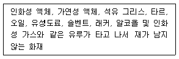
- A급 화재
- B급 화재
- C급 화재
- K급 화재
(정답률: 77%)
67. 스프링클러설비에서 스프링클러헤드의 방수구에서 유출되는 물을 세분시키는 작용을 하는 것은?
- 익져스터
- 디프렉타
- 리타딩챔버
- 액설러레이터
(정답률: 70%)
68. 자기인덕턴스 4[H]의 코일에 8[A]의 전류를 흘릴 때 코일에 저장되는 자기에너지는?
- 32[J]
- 64[J]
- 128[J]
- 256[J]
(정답률: 51%)
69. 다음 중 옥내소화전설비의 화재안전기준상 배관 내 사용압력이 1.2Mpa 이상인 경우 배관 재료로 가장 적합한 것은?
- 배관용 탄소강관
- 압력배관용 탄소강관
- 배관용 스테인리스강관
- 이음매 없는 구리 및 구리합금관
(정답률: 71%)
70. 엘리베이터설비에서 케이지가 최종 층에서 정지 위치를 지나쳤을 경우 바로 작동해서 제어회로를 개방, 전동기 전원을 차단하고, 전자 브레이크를 작동시켜 엘리베이터를 정지시키는 기능을 하는 것은?
- 조속기
- 가이드 슈
- 최종 리밋 스위치
- 슬랙 로프 세이프티
(정답률: 71%)
71. 보호구간으로 유입하는 전류와 보호구간에서 유출되는 전류의 벡터차와 출입하는 전류와의 관계비로 동작하는 보호계전기는?
- 거리 계전기
- 과전압 계전기
- 과전류 계전기
- 비율차동 계전기
(정답률: 56%)
72. 최대 방수구역에 설치된 스프링클러헤드의 개수가 20개인 경우, 스프링클러설비의 수원의 저수량은 최소 얼마 이상이 되도록 하여야 하는가? (단, 개방형 스프링클러헤드를 사용하는 경우)
- 17m3
- 32m3
- 48m3
- 64m3
(정답률: 71%)
73. 다음 설명에 알맞은 피드백 제어계의 구성요소는?
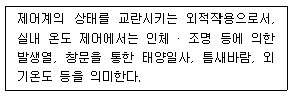
- 외란
- 제어대상
- 제어편차
- 주 피드백 신호
(정답률: 77%)
74. 220[V]용 200[W] 전구에 흐르는 전류는?
- 약 0.5[A]
- 약 0.9[A]
- 약 2.2[A]
- 약 4.4[A]
(정답률: 67%)
75. 다음의 설명에 알맞은 법칙은?
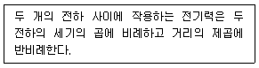
- 옴의 법칙
- 렌쯔의 법칙
- 쿨롱의 법칙
- 키르히호프의 제1법칙
(정답률: 63%)
76. 자동제어방식 중 디지털방식에 관한 설명으로 옳지 않은 것은?
- 자기진단 기능을 보유하고 있다.
- 기능의 고급화를 도모할 수 있다.
- 제어의 정밀도가 낮으며 신뢰성이 다소 떨어진다.
- 각종 제어로직은 손쉽게 소프트웨어에 의해 조정될 수 있다.
(정답률: 82%)
77. LPG에 관한 설명으로 옳지 않은 것은?
- 발열량이 크다.
- 액화석유가스를 의미한다.
- 연소 시 다량의 공기가 필요하다.
- 공기보다 가벼워 누설이 되어도 안전성이 높다.
(정답률: 80%)
78. 다음과 같은 RLC 직렬회로에서 역률은?
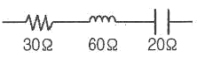
- 0.6
- 0.7
- 0.78
- 0.85
(정답률: 46%)
79. 변압기의 1차 측을 Y결선, 2차 측을 Δ결선으로 했을 경우, 1·2차간 전압의 위상차는?
- 30°
- 45°
- 60°
- 90°
(정답률: 39%)
80. 동일한 저항을 가진 3개의 도선을 병렬로 연결하였을 때의 합성저항은?
- 1개 도선저항의 1/3
- 1개 도선저항의 2/3
- 1개 도선저항의 1배
- 1개 도선저항의 3배
(정답률: 65%)
5과목: 건축설비관계법규
81. 다음은 건축물의 에너지절약설계기준에 따른 방습층의 정의이다. ( )안에 알맞은 것은?
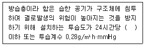
- 10g/m
- 20g/m
- 30g/m
- 40g/m
(정답률: 58%)
82. 건축물의 에너지절약설계기준상 기계부문에 권장되는 냉방설비의 용량계산을 위한 설계기준 실내온도 기준은? (단, 목욕탕 및 수영장은 제외한다.)
- 20℃
- 25℃
- 28℃
- 30℃
(정답률: 70%)
83. 건축법령상 숙박시설에 속하지 않는 것은?
- 호스텔
- 청소년수련원
- 의료관광호텔
- 휴양 콘도미니엄
(정답률: 73%)
84. 신축 또는 리모델링하는 100세대 이상의 공동주택은 시간당 최소 몇 회 이상의 환기가 이루어질 수 있도록 자연환기설비 또는 기계환기설비를 설치하여야 하는가?
- 0.5회
- 0.7회
- 1.2회
- 1.5회
(정답률: 78%)
85. 건축물의 내부에 설치하는 피난계단의 구조에 관한 기준 내용으로 옳지 않은 것은?
- 계단실의 실내에 접하는 부분의 마감은 불연재료로 할 것
- 계단은 내화구조로 하고 피난층 또는 지상까지 직접 연결되도록 할 것
- 건축물의 내부와 접하는 계단실의 창문등의 면적은 각각 3m 이하로 할 것
- 건축물의 내부에서 계단실로 통하는 출입구의 유호너비는 0.9m 이상으로 할 것
(정답률: 66%)
86. 같은 건축물안에 공동주택과 위락시설을 함께 설치하고자 하는 경우, 공동주택의 출입구와 위락시설의 출입구는 서로 그 보행거리가 최소 얼마 이상이 되도록 설치하여야 하는가?
- 10m
- 20m
- 30m
- 50m
(정답률: 75%)
87. 다음은 지하층과 피난층 사이의 개방공간 설치에 관한 기준 내용이다. ( )안에 알맞은 것은?
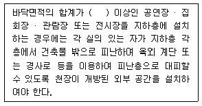
- 1000m
- 2000m
- 3000m
- 4000m
(정답률: 64%)
88. 연면적 200m2 을 초과하는 중 · 고등학교에 설치하는 복도의 유효너비는 최소 얼마 이상으로 하여야 하는가? (단, 양옆에 거실이 있는 복도의 경우)
- 1.5m 이상
- 1.8m 이상
- 2.1m 이상
- 2.4m 이상
(정답률: 63%)
89. 판매시설로서 옥내소화전설비를 모든 층에 설치하여야 하는 특정소방대상물의 연면적 기준은?
- 500m2 이상
- 1000m2 이상
- 1500m2 이상
- 2000m2 이상
(정답률: 33%)
90. 피난 용도로 쓸 수 있는 광장을 옥상에 설치하여야 하는 대상에 속하지 않는 것은?
- 5층 이상인 층이 종교시설의 용도로 쓰는 경우
- 5층 이상인 층이 판매시설의 용도로 쓰는 경우
- 5층 이상인 층이 문화 및 집회시설 중 공연장의 용도로 쓰는 경우
- 5층 이상인 층이 문화 및 집회시설 중 전시장의 용도로 쓰는 경우
(정답률: 69%)
91. 방송 공동수신설비를 설치하여야 하는 대상 건축물에 속하지 않는 것은?
- 연립주택
- 다가구주택
- 바닥면적의 합계가 5000m2로서 업무시설의 용도로 쓰는 건축물
- 바닥면적의 합계가 5000m2로서 숙박시설의 용도로 쓰는 건축물
(정답률: 61%)
92. 비상용승강기의 승강장 및 승강로의 구조에 관한 기준 내용으로 옳지 않은 것은?
- 승강장은 각층의 내부와 연결될 수 있도록 할 것
- 승강로는 당해 건축물의 다른 부분과 내화구조로 구획할 것
- 벽 및 반자가 실내에 접하는 부분의 마감재료는 불연재료로 할 것
- 옥외 승강장의 바닥면적은 비상용승강기 1대에 대하여 5m이상으로 할 것
(정답률: 77%)
93. 건축물을 특별시나 광역시에 건축하는 경우 특별시장이나 광역시장의 허가를 받아야 하는 대상 건축물의 층수 기준은?
- 15층 이상
- 21층 이상
- 30층 이상
- 41층 이상
(정답률: 77%)
94. 공동 소방안전관리자 선임대상 특정소방대상물의 연면적 기준은? (단, 복합건축물인 경우)
- 5000m2 이상
- 10000m2 이상
- 15000m2 이상
- 20000m2 이상
(정답률: 48%)
95. 다음 중 허가 대상에 속하는 건축물의 용도 변경은?
- 장례시설에서 발전시설로의 용도변경
- 위락시설에서 숙박시설로의 용도변경
- 종교시설에서 운동시설로의 용도변경
- 업무시설에서 교육연구시설로의 용도변경
(정답률: 45%)
96. 다음은 주택에 설치하는 소방시설에 관한 기준내용이다. 밑줄 친 대통령령으로 정하는 소방시설에 해당하는 것은?
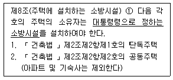
- 소화기 및 단독경보형감지기
- 소화기 및 간이스프링클러설비
- 간이소화용구 및 자동소화장치
- 간이소화용구 및 자동식사이렌설비
(정답률: 63%)
97. 특별피난계단에 설치하는 배연설비의 구조에 관한 기준 내용으로 옳지 않은 것은?
- 배연구 및 배연풍도는 불연재료로 할 것
- 배연구는 평상시에는 닫힌 상태를 유지할 것
- 배연구는 평상시에 사용하는 굴뚝에 연결할 것
- 배연기는 배연구의 열림에 따라 자동적으로 작동할 것
(정답률: 73%)
98. 승강기 설치 대상 건축물로서 각 층의 거실면적이 500m2인 8층 병원에 설치하여야 하는 승용승강기의 최소 대수는? (단, 8인승 승강기인 경우)
- 1대
- 2대
- 3대
- 4대
(정답률: 56%)
99. 다음 중 다중이용건축물에 속하지 않는 것은?（단, 층수가 10층이며, 해당 용도로 쓰는 바닥면적의 합계가 500m2인 경우)
- 종교시설
- 판매시설
- 위락시설
- 숙박시설 중 관광숙박시설
(정답률: 49%)
100. 다음은 소방시설의 내진설계에 관한 기준 내용이다. 밑줄 친 대통령령으로 정하는 소방시설에 속하지 않는 것은?
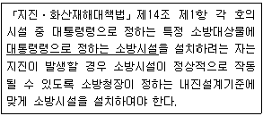
- 옥내소화전설비
- 스프링클러설비
- 자동화재탐지설비
- 물분무등소화설비
(정답률: 51%)